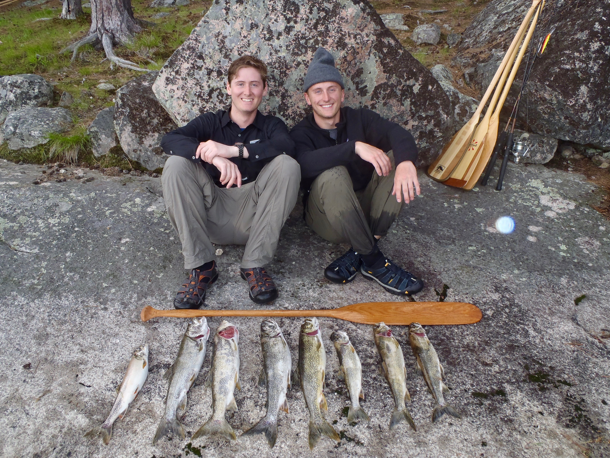
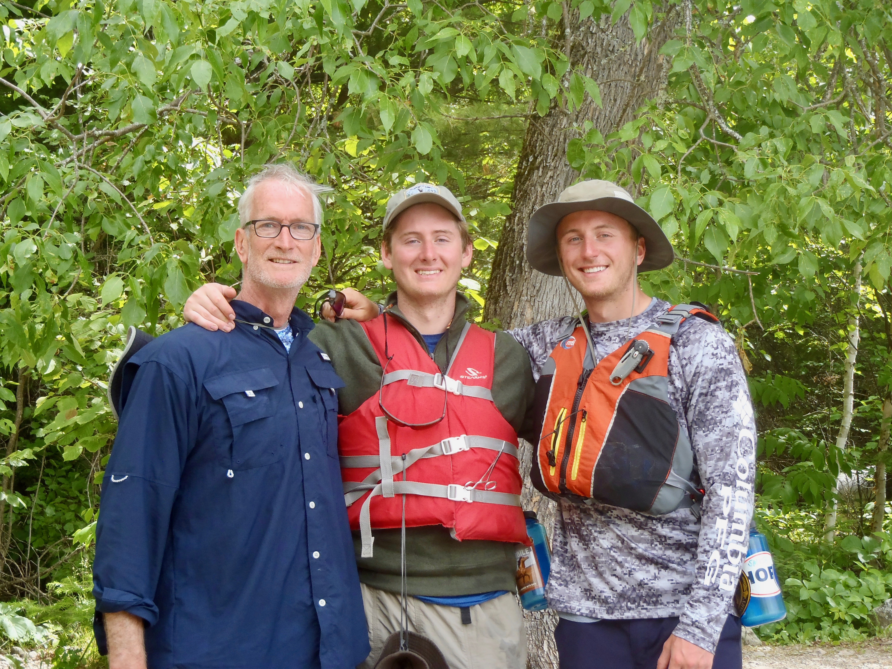
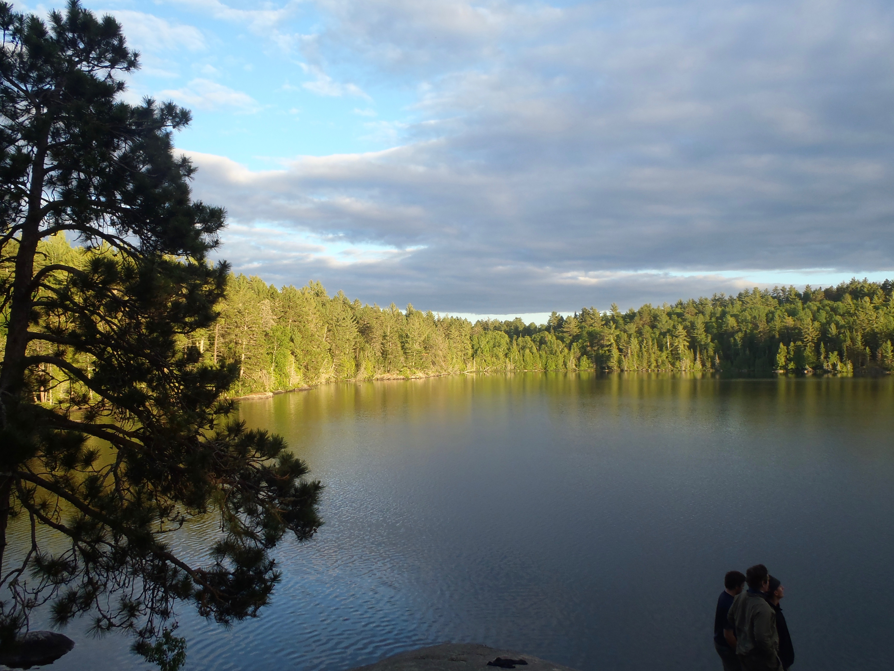
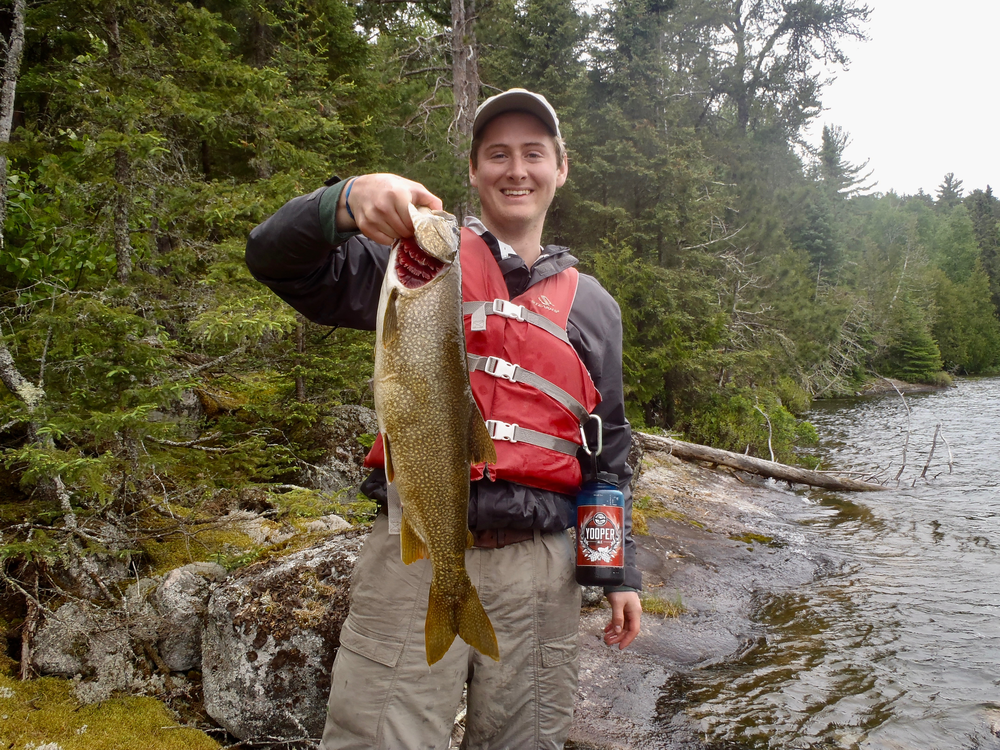

You can get to know me by understanding my love for the wilderness and my family. For the last ten years, I have gone on a wilderness camping trip in the Boundary Waters Canoe Area Wilderness, or BWCA. The BWCA is a massive park in northern Minnesota, and shares the border with Canada. In this setting, I have been able to canoe, fish, and explore nature. What is more important is that it has brought me closer to my family, especially my brother, Austin, and my father.
   